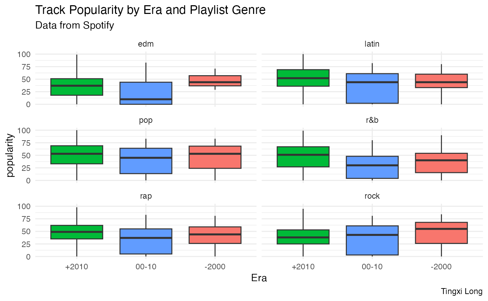
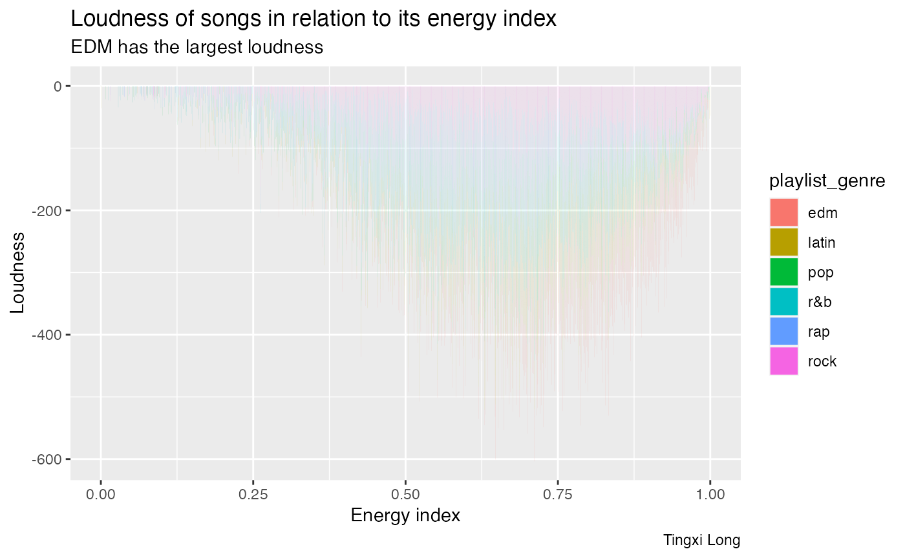
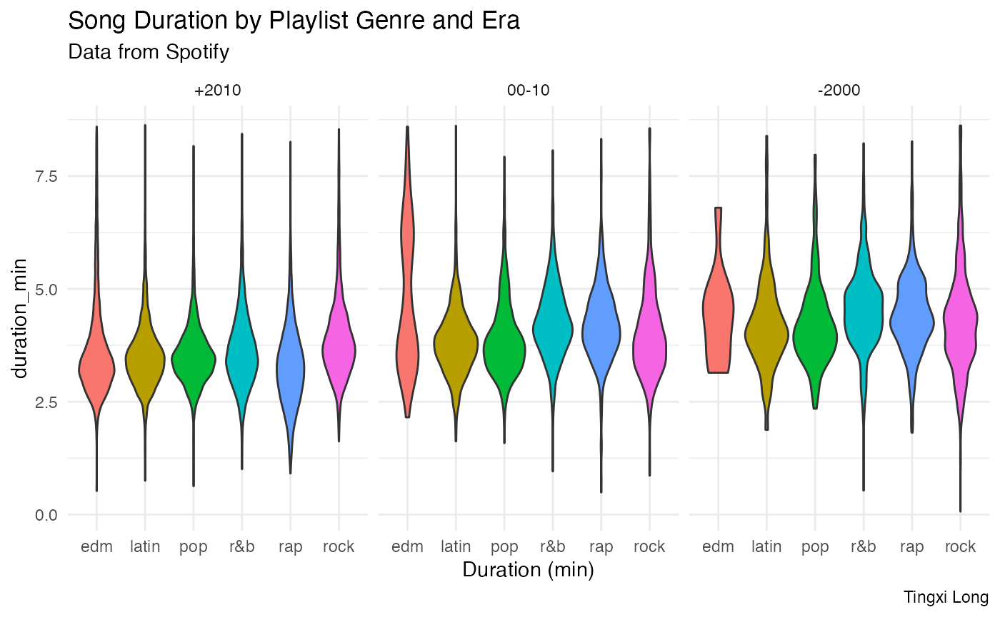
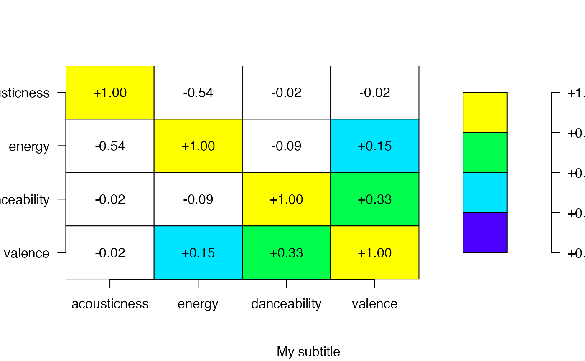
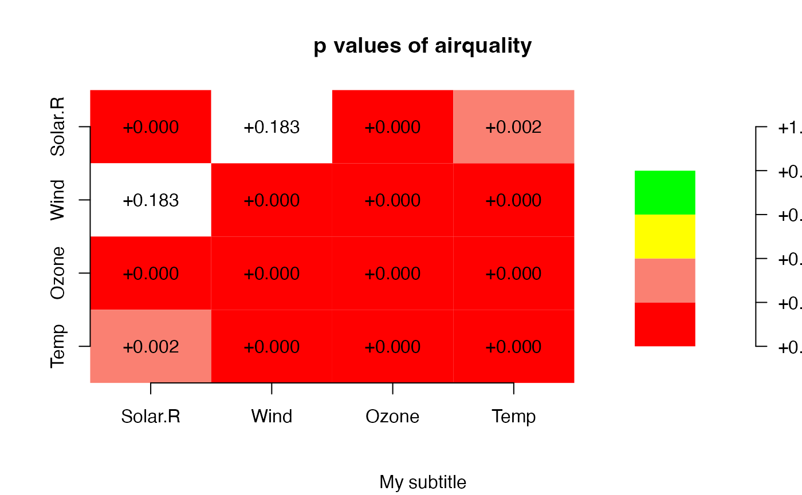

Introduction
In this part, I will perform an example data analysis with R with [@tidytuesday; @spotify_songs].
Objective:
- What is the track popularity of genre by era?
- What is the loudness of songs in relation to its energy index
- What is song Duration by Playlist Genre and Era
Link to original data: The datasets for this part of the assignment comes from TidyTuesday.
Get the data
Note that the echo = FALSE parameter was added to the
code chunk to prevent printing of the R code that generated the
plot.
# Check if the data already exist
if(!dir.exists(here("data"))) { dir.create(here("data")) }
if(!file.exists(here("data","tuesdata_song.RDS"))){
tuesdata <- tidytuesdayR::tt_load('2020-01-21')
spotify_songs <- tuesdata$spotify_songs
# save the files to RDS objects
saveRDS(tuesdata$spotify_songs, file = here("data","tuesdata_song.RDS"))
}Let’s load the data
- Here is a list of full data dictionary for what all the column names mean.
Data wrangling using purrr
# 1 demonstrate purrr.
str_dat <- song |>
split(song$playlist_genre) |>
map(.f = ~mean(.x$danceability))
str_dat## $edm
## [1] 0.6550409
##
## $latin
## [1] 0.7132873
##
## $pop
## [1] 0.6393017
##
## $`r&b`
## [1] 0.6701793
##
## $rap
## [1] 0.7183528
##
## $rock
## [1] 0.520548
song$temp_ener <- pmap_dbl(song,
.f = function(tempo, energy, ...){
tempo/energy
})Plots
f <- factor(c("2000", "00-10", "2010"), levels = c("2000", "00-10", "2010"))
songs_era %>%
filter(!is.na(era)) %>%
group_by(playlist_genre, era) %>%
ggplot() +
geom_boxplot(aes(x=fct_inorder(era), track_popularity, fill=era), outlier.size=0) +
facet_wrap(~playlist_genre,nrow = 3) +
labs(x='Era',y="popularity") +
theme_minimal() +
theme(legend.position = 'none')+
labs(title = "Track Popularity by Era and Playlist Genre",
subtitle = "Data from Spotify", caption = "Tingxi Long",
x='Era',
y="popularity") ## plot 2
fig2 <-song %>%
ggplot(aes(fill=playlist_genre,x=energy,y=loudness))+
geom_bar(stat='identity')+
labs(title ="Loudness of songs in relation to its energy index", subtitle =
"EDM has the largest loudness", caption = "Tingxi Long")+ylab("Loudness")+xlab("Energy index")
fig2
# Select category=Asians.
songs_era %>%
na.omit(era) %>%
ggplot(aes(x=playlist_genre,y=duration_min)) +
geom_violin(aes(fill=playlist_genre)) +
facet_grid(~fct_inorder(era)) +
theme_minimal() +
labs(x='Duration (min)') +
labs(title = "Song Duration by Playlist Genre and Era",
subtitle = "Data from Spotify", caption = "Tingxi Long",
x='Duration (min)') +
theme(legend.position = 'none')
Use Plot.matrix
index <- song[,c("danceability","energy","valence","acousticness")]
cindex<-cor(index,use = "complete.obs")
plot(as.assoc(cindex), col=topo.colors, main="My title",
axis.col=list(side=1, las=1),axis.row=list(side=2, las=1),ann = FALSE)
title(sub = "My subtitle")
data(air.pvalue)
plot(as.pvalue(air.pvalue),main="p values of airquality",border=NA)
title(sub = "My subtitle")
Summary:
Generally, the songs produced in 2000-2010 has lowest popularity. But we only see a constant decreasing in popularity for rock songs among 3 eras.
EDM songs are more loud regardless of the energy index.
Generally, the song duration is decreasing by time. But the duration of EDM songs has larger variance during 2000-2010.
dplyr::
filter
group_by
arrange
mutate
case_when
stringr::
string_detect
ggplot:
geom_boxplot
geom_bar
geom_violin